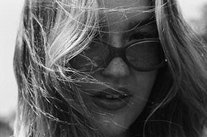

The Feed
Friends inspire Friends
This weekend, I gave alot of time to meeting new friends and spending time with the ones I already have. I felt very fulfilled and inspired by all of them, whether old friend or new.
I carrying these memories with me by taking photos!
Primary colors
I oftentimes find myself gravitating toward the root of all colors to find inspiration. Alot of photos I've been taking have consisted of this color scheme!

Looking at showtimes at the Vogue Theare for this week!
Cinema Paradiso is an Italian foreign film about a man who reflects on his childhood in his local cinema. He grows a bond with the projectionist and becomes an apprentice from a very young age.
35mm I took of my friends
Alot of my digital life lives in editing photos for my portfolio! I usually do this via Photoshop!

Me in digital, flower form!
Tansys are a symbol of immortality

Photoshoot!
My best friend and I do weekly photoshoots. I've recently been working on my portfolio and i find myself being drawn, more and more to photography.

Summer blues
I took this photo of one of my best friends, Siena, when she visited me at home this summer. This was my second role of 35mm film ever.
Siena and I spent the whole day talking, walking, swimming, and sneaking photos. This week maded my heart so warm, so it was very lovely to have photos to look back on.
This week, I got my film back and it came back in color! I really thought it was a B&W role but It was such a sweet surprise to see such good memories in color.
I went throught the hole role and spent a ton of time manipulating the colors and working with opacity/layering.
Cyanotyping Project
The process is actually quite easy! It begins with printing a negative on film paper, then you apply the blue formula to your desired surface. Then, move into a sunny space and place your negative over your dyed surface. Let sit for 15 minutes and then rinse in warm water.
When I find myself in a creative block, I search up ideas on Pinterest.

Lauren
35mm shot by me!
I spend ~30 mins to an hour a day editing photos!
Abstraction
Finding inspiration in the forms of my day to day life inspire me!

Depop takes up alot of my daily digital time.
I spend a ton of time buying and reselling clothes second hand! Different Textiles and Clothing designs inspire me to rework clothing and tailor my style